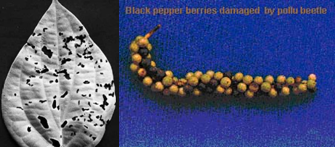

| Home |
| PEST OF PEPPER |
mAJOR pESTS |
| 1. Pollu beetle |
| 2. Top shoot borer |
| 3. Berry gall midge |
| 4. Marginal gall thrips |
| 1. Coconut scale |
| 2. Whitefly |
| Questions |
| Download Notes |
PEPPER :: MAJOR PEST ::POLLU BEETLE
1. Pollu beetle: Longitarsus nigripennis (Chrysomelidae: Coleoptera)
Distribution and status: India (West Coast area)
Host range: Pepper (No alternate host reported so far)
Damage symptoms
The grubs bore into the berries of pepper. The infested berries dry up and turn dark in colour. Berries are hollow and crumble when pressed. Such hollow berries are called “POLLU” (Empty). Grub may also eat the spike causing the entire region beyond it to dry up. When contents of one berry is exhausted, the grub move to next and feed continuously.
|  |
Bionomics
Adult is a bluish yellow shining flea beetles. Eggs are laid on the berries and lays 1-2 eggs in each hole, egg period 5-8 days, larval period 30-32 days. Pupation occurs in soil in a depth of 5.0 - 7.5 cm. Pupal period 6-7 days. Life cycle completed in 40 - 50 days. Four overlapping generations in a year.
Management
- Rake the soil and incorporate quinalphos 1.5 D, carbaryl 5 D, endosulfan 4 D @ 25 kg/ha to kill the pupae in the soil